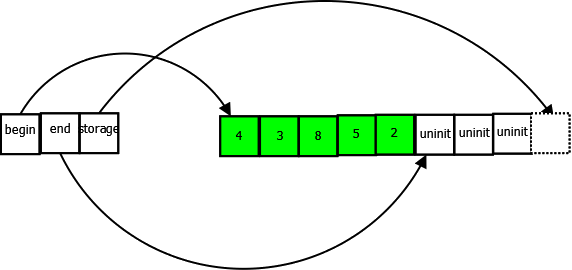
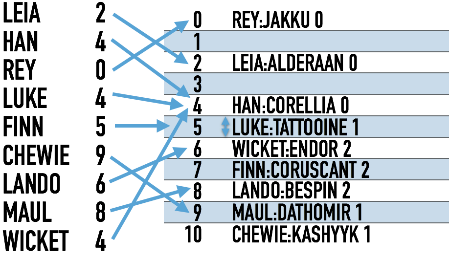

CB-Geo MPM
An MPM code for large-scale geomechanics simulations
Krishna Kumar, krishnak@utexas.edu
University of Texas at Austin
Kenichi Soga, Shyamini Kularathna, Jeffrey Salmond, Christopher Wilkes, Ezra Tjung, Tianchi Zhao, Thiago Araujo and Wentao Xu.


12th Annual MPM Workshop, Virginia Tech, USA
10th September 2019
CB-Geo Computational Geomechanics
- CB-Geo MPM Open source code: https://github.com/cb-geo/mpm.
- Documentation and validation https://cb-geo.github.io/mpm-doc/#/.
- Benchmark problems: https://github.com/cb-geo/mpm-benchmarks.
Large-scale geomechanics simulations
- Large-scale multiphase multi-physics problems
- Develop a modular system
- Algorithms: Explicit, implicit, projection method
- Mapping functions: linear, GIMP, CDPI
- Complex geometries and boundary conditions
- Distributed and shared-memory parallel

HPC MPM code
- Generic Templatised C++14
- 2D/3D MPM Code
- Generalise Interpolation Material Point
- Distributed MPI
- Intel TBB parallelisation
- Isoparametric elements
- HDF5 data stores
- Jupyter Notebooks integration
- Material models:
- Linear elastic
- Mohr coulomb
- Bingham fluid
- Newtonian
Code overview
Factory design pattern
Factory implementation
//! A helper class to register a factory function
//! \tparam Targs variadic template arguments
template <typename Tbaseclass, typename Tderivedclass, typename... Targs>
class Register {
public:
//! Register with a given key
explicit Register(const std::string& key) {
// register the class factory function
Factory<Tbaseclass, Targs...>::instance()
->template register_factory<Tderivedclass>(key);
}
};
// Quadrilateral 4-noded element
static Register<mpm::Element<2>, mpm::QuadrilateralElement<2, 4>>
quad4("ED2Q4");
// Quadrilateral 4-node-base GIMP element
static Register<mpm::Element<2>, mpm::QuadrilateralGIMPElement<2, 16>>
quad_gimp16("ED2Q16G");
Iterate over particles / nodes/ cells functions
// Apply a given functor to all particles making use of tbb::parallel_for_each
// \tparam Toper Type of the particle operation
// \param[in|out] oper Specific operation applied to all particles
template <unsigned Tdim>
template <typename Toper>
void mpm::Mesh<Tdim>::iterate_over_particles(Toper oper) {
tbb::parallel_for_each(particles_.cbegin(), particles_.cend(), oper);
}
// Iterate over particles to compute mass
// Compute mass
mesh_->iterate_over_particles(std::bind(
&mpm::ParticleBase<Tdim>::compute_mass, std::placeholders::_1, phase));
Vectorization
Non-vectorized
Vectorized
Shared v Distributed memory architectures
Cache
C++ STL containers: Vector
C++ STL containers: Map
Robinhood hashing
Robinhood hashing performance
Credits: https://github.com/Tessil/robin-mapDistributed parallel: Naive implementation
Ghost particle vs Vertex parallel
Ruggirello & Schumacher (2014)
Ghost particle vs Vertex parallel
Ruggirello & Schumacher (2014)
Graph partitioning: ParMETIS
Isoparametric elements
Ezra Tjung (2019) and Christopher Wilkes (2019)
Unit testing and code coverage
- CI with CircleCI (Docker Container)
- Automated testing on G++/Clang
- Unit tests: 11794 assertions in 50 test cases
- Code Coverage - how much >91% of code has been unit tested
Disney's Frozen: Snow simulation
Credits: Disney
Photo-realistic rendering
- ParaView VTP (compressed binaries)
- HDF5 - large dataset format - Jupyter Notebook - Analysis
- HDF5 + VTK
- Disney Partio: Houdini / Maya / Pixar's RenderMan


In-situ viz
Credits: Paraview Catalyst
Intel OSPRay
Credits: Intel OSPray
In-situ viz rendering using OSPRay